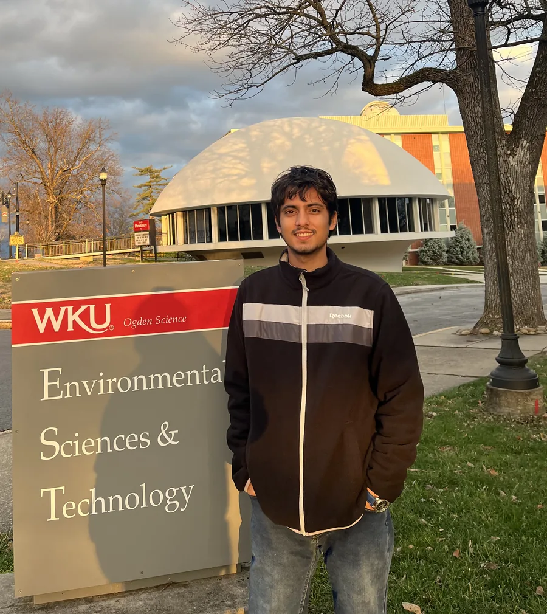
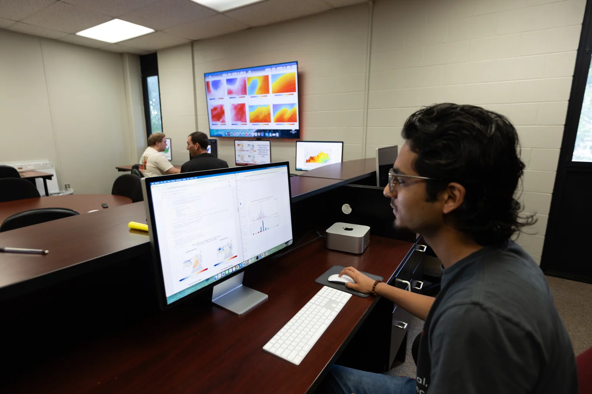
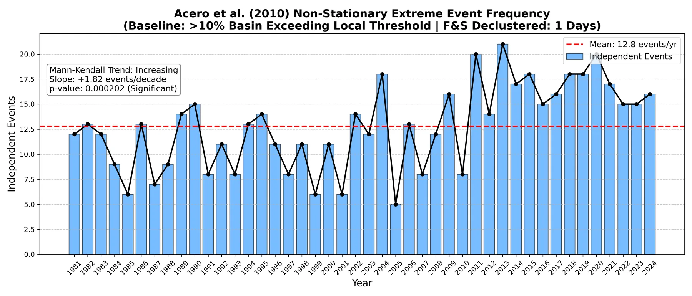
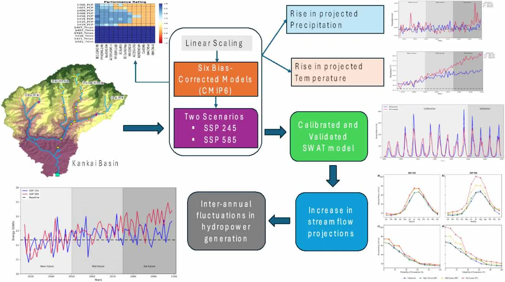
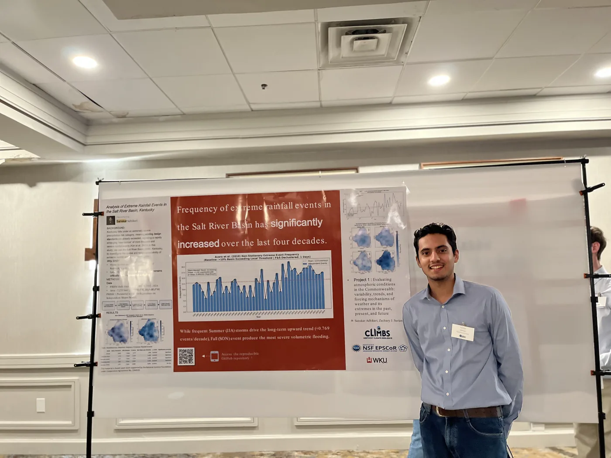
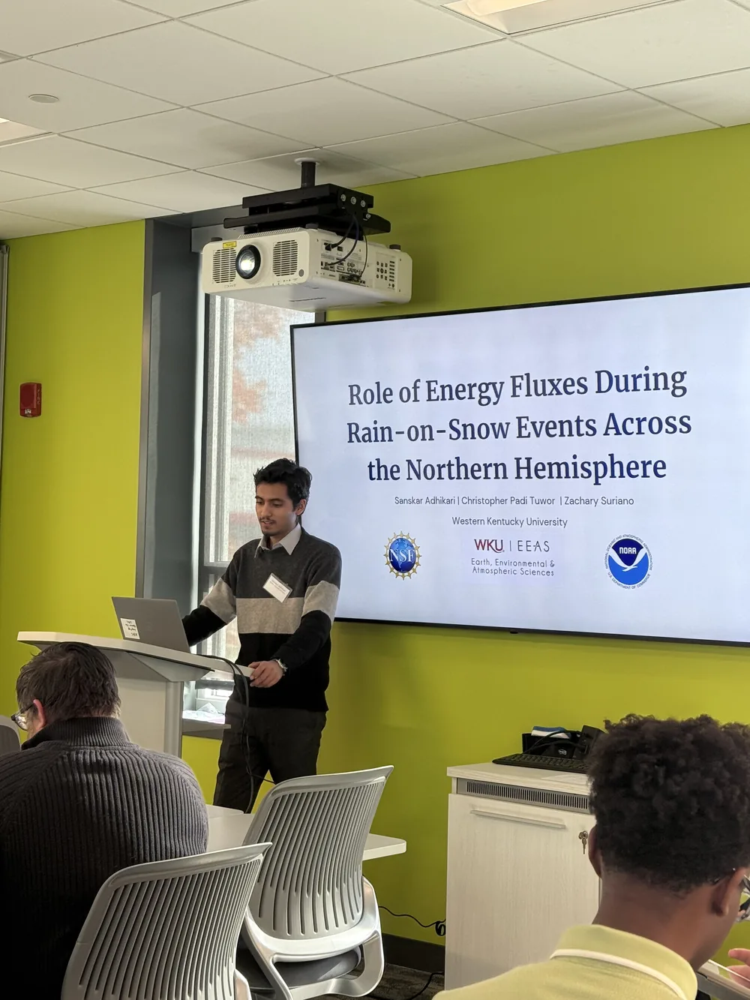

M.S., GeoscienceAug 2025 – present
Western Kentucky University, Bowling Green, KY. Advisor: Zachary J. Suriano, Ph.D.
Graduate Researcher · Hydroclimatology & Water Resources
M.S. Geoscience · Climate Research Lab, Western Kentucky University
I investigate extreme rainfall, compound hydroclimatic events, and rain-on-snow processes using climate observations, hydrological modeling, and computational analysis.

Featured research
A significant rise in independent extreme-rainfall events, 1981–2024, from non-stationary peaks-over-threshold analysis.
Read more → Under review · npj Hydrosphere ~2.5 TB hourly ERA5Hemispheric rain-on-snow events, 1980–2025, and the role of turbulent heat fluxes in their energy budget.
Read more → Under review 66 Mesonet stationsPrecipitation-frequency estimates from 5-minute observations, compared with the design values engineers use.
Read more →About
I'm a graduate student in Geoscience at Western Kentucky University, advised by Dr. Zachary J. Suriano. My M.S. thesis asks whether extreme rainfall in Kentucky's Salt River Basin is becoming more frequent, and how antecedent soil moisture shapes the streamflow response when it does.
Alongside the thesis, I work on hemispheric rain-on-snow events and their surface energy budgets, and on precipitation-frequency estimates from the Kentucky Mesonet. I also served as a teaching assistant for the METR 121 meteorology lab.
Before WKU, I earned a B.E. in Civil Engineering from Tribhuvan University (IOE Pulchowk Campus) and registered as a civil engineer with the Nepal Engineering Council.
Research interests

Research
Each project lists my role, where it stands in publication, and selected results. Click any figure to open it full size.
Salt River Basin, Kentucky · Climate Research Lab, WKU
Are extreme rainfall events in the Salt River Basin becoming more frequent? I apply a non-stationary peaks-over-threshold (POT) framework to 44 years of 4-km PRISM daily precipitation. Thresholds follow the seasonal cycle (adapted from Acero et al., 2011), a basin-coverage criterion flags basin-wide events, and Ferro–Segers declustering separates independent storms. The next stage links these events to streamflow and antecedent soil moisture to study compound hydroclimatic extremes.

Northern Hemisphere · Climate Research Lab, WKU
Rain falling on snowpack can trigger rapid melt and flooding. Using hourly ERA5 reanalysis from 1980 to 2025, I identified rain-on-snow (ROS) hours across Northern Hemisphere land at three intensity thresholds (0.5, 1.0, and 2.0 mm per hour). I then examined the surface energy budget during those hours: sensible and latent heat, net solar, and net thermal radiation, by region and by elevation.
Kentucky · Western Kentucky University
Engineers size culverts, bridges, and storm drains with NOAA Atlas 14 precipitation-frequency estimates. We derived intensity–duration–frequency (IDF) statistics directly from high-resolution Kentucky Mesonet observations and compared them with Atlas 14 to see how well the published values hold up across durations.
Kankai River Basin, eastern Nepal
Nepal depends on run-of-river hydropower, so changes in streamflow translate directly into changes in energy supply. We forced a calibrated and validated SWAT model with bias-corrected projections from six CMIP6 global climate models under SSP2-4.5 and SSP5-8.5, then estimated energy generation at three hydropower projects through 2100.

Gitanagar, Nagarkot, Nepal · IOE Pulchowk Campus
We designed a combined pumping and gravity-fed water supply system for a 20-year design period, from field surveys, population projections, and demand assessment through to intake, treatment, storage, and distribution.
Publications
H2Open Journal 8(6), 465–490 · 2025 · DOI ↗
Turbulent heat fluxes are key to understanding extreme Northern Hemispheric rain-on-snow events
npj Hydrosphere
On the frequency of snow and ice damming potential in the Mid-South, United States
Cold Regions Science and Technology
A comparison of Atlas 14 to precipitation frequency statistics derived from the Kentucky Mesonet
Journal of Applied and Service Climatology
Role of antecedent soil moisture conditions during compound hydroclimatic extremes: Rainfall and streamflow events in the Salt River Basin, Kentucky
Non-stationary peak-over-threshold study of changes in extreme rainfall events in the Salt River Basin, Kentucky
Presentations

EPSCoR SuperCollider

Kentucky Academy of Science Conference, University of Louisville
American Meteorological Society Annual Meeting, Denver, CO: presenting Salt River Basin thesis research, supported by a WKU Graduate Student Research/Travel Grant.
Experience
Education
Western Kentucky University, Bowling Green, KY. Advisor: Zachary J. Suriano, Ph.D.
Tribhuvan University, IOE Pulchowk Campus, Lalitpur, Nepal
Positions and recognition
Climate Research Lab, Western Kentucky University
Introduction to Meteorology lab: in-person and Zoom lab sessions, assignments, concept checks, and quizzes.
Office of Research & Creative Activity, WKU
Nepal Engineering Council (NEC)
Skills
I'm happy to talk about hydroclimate research, collaborations, or graduate opportunities.
sanskar.adhikari280@topper.wku.edu